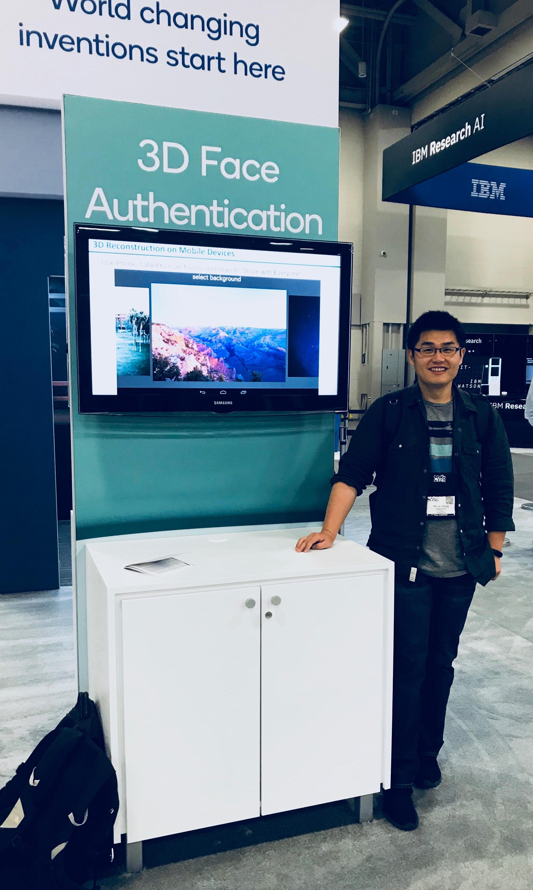

Welcome! My name is Shuai Zhang and
I am a senior staff machine learning researcher and tech lead at Qualcomm Computer Vision Group, USA.
My research interests are
numerical optimization,
computer vision
and
neural networks, especially on Edge AI.
Feel free to look at my
research and my
resume to learn more!
NOTE: This is a personal webpage and any views or information reflect
solely the author and are not the views of the Qualcomm.